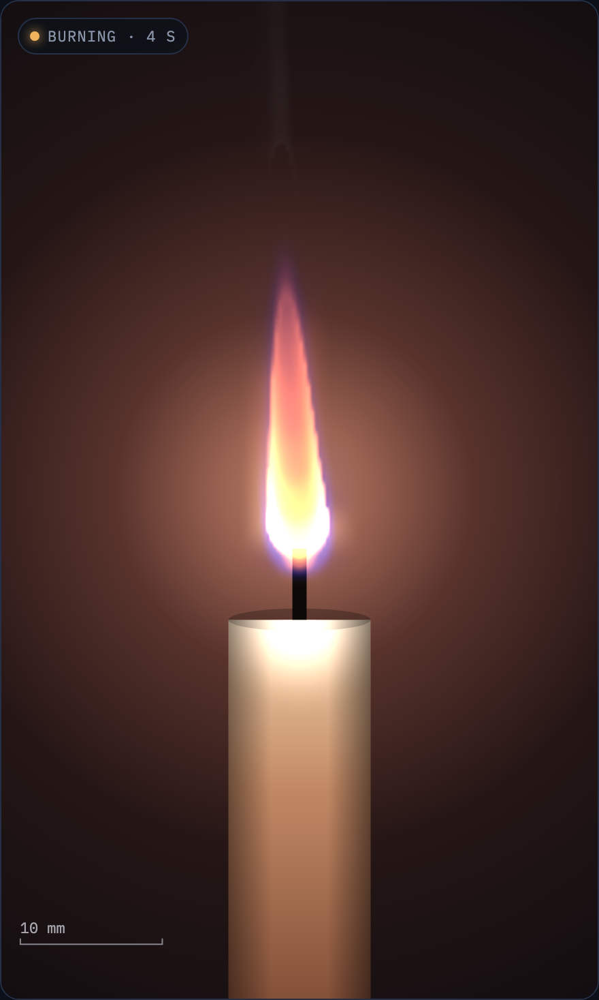

acorns.nutlore.me · simple demos
Blackbody Candle
A candle you can light, where nothing about the flame is hand-drawn: shape from a reacting, buoyant flow, colour from Planck’s law through the CIE 1931 eye.

A candle you can light, where nothing about the flame is hand-drawn: shape from a reacting, buoyant flow, colour from Planck’s law through the CIE 1931 eye.